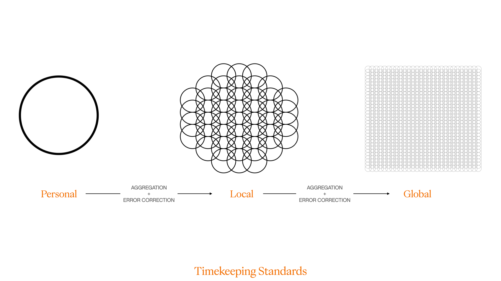

Heliotropic Horology
Overview
Ever since humankind could walk, talk and make sense of the world, we’ve kept some record of time. The sun was once the primary anchor to which we kept time. With the advent of civilisations, and ultimately capitalism, time was defined by the economy and the productivity of humans in the workplace. But what if we set our time to the motions of a sunflower?
Heliotropism cause the sunflower to face the sun to aid pollination. During they day the flower changes its position to face the sun, and moves back into position during the night.
In order to build out a timekeeping infrastructure, the people behind this idea, who call themselves The Heliotropes, created a series of prototypes for a new standard called Sunflower Standard Time (SST).
Using simple computer vision methods, Prototype 3b.1 was the first successful working prototype which could accurately report SST. By tracking the position of the sunflower as it moved during the day, the prototype could tell the time of day, and night.
As the Heliotropes transitioned away from human time, they found it difficult to create a whole new time standard. Thus, they decided to create a Transitionary Time Practice (TTP), using other types of plants to substitute for seconds, minutes and hours. In areas where the sunflower couldn’t be grown, they used other species of daisies.
Although Transitionary Time Practice would serve as a good stop-gap, the Heliotropes wanted to move away from traditional notions of timekeeping, and so, they proposed many different kinds of clock designs. The time data is sent to the watches by the computer vision prototype.
The intent of using sunflowers is to not only peg time to a notion which is connected to the planet, but to also slow time down and live a healthier and more meaningful life. Each Heliotrope has their own personal time, which is set by the sunflower they are paired with.
Not all are lucky to have a sunflower of their own, which is where sunflower farms are used to rent out, or share sunflowers over the internet.
The creation of personal time doesn’t mean that standardised time cannot exist. Neighbourhoods, cities, countries, and the entire world can have different time zones. A moving average of personal times is used to define the different scales of time.

As the sunflower grows older, it eventually loses its heliotropic ability to face the sun during the day, and by extension, its affordance as a timekeeping device. When it reaches a certain vintage, a sunflower will always point east, which makes it an excellent compass.